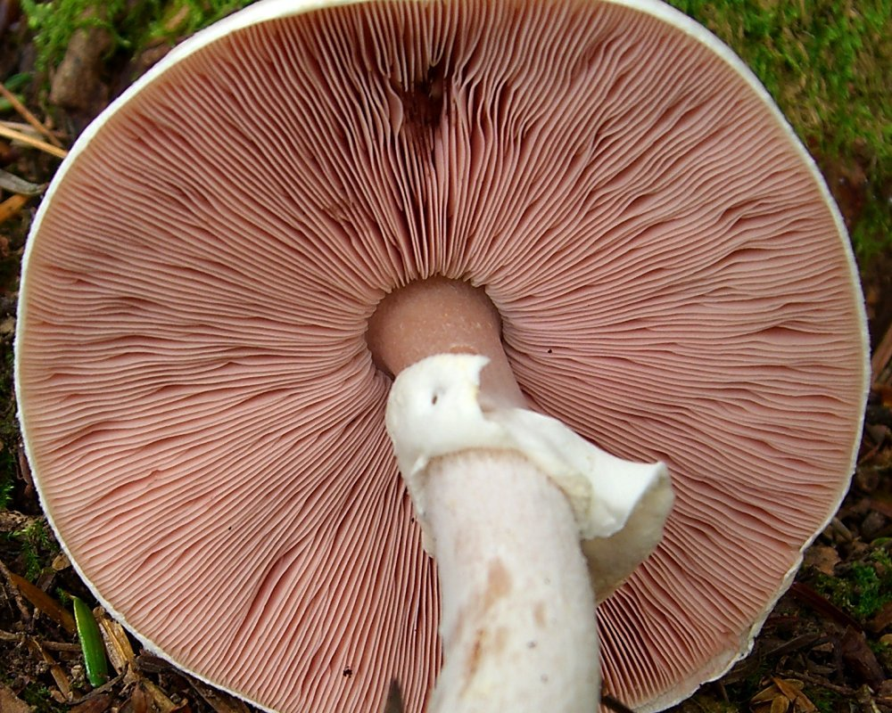
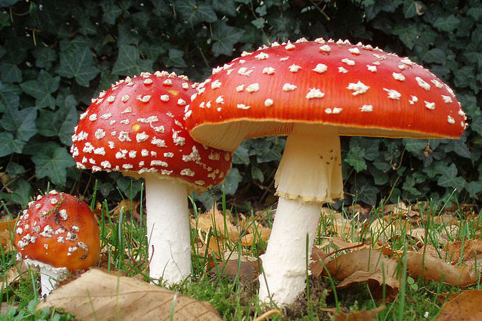
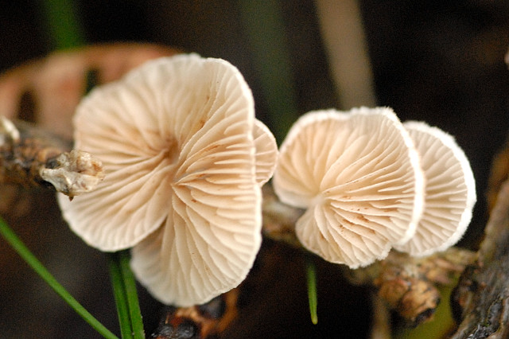
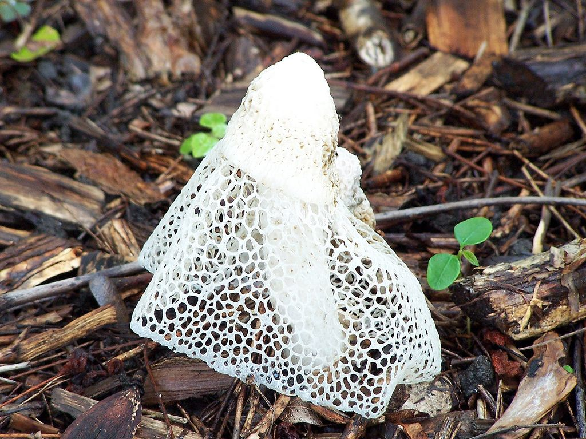

Reino Fungi - Especies de Hongos
Existen una gran cantidad de tipos de hongos en el mundo, y cada uno pertenece a diferentes grupos taxonómicos.

Agaricus: Incluye especies conocidas como champiñones y setas.

Amanita: Este género contiene varios hongos icónicos, como la Amanita muscaria, conocida como el hongo de los pitufos.

Crepidotus: Son pequeños hongos saprofitos en su mayoría, el pileo tiene la forma de abanico, sus colores van del blanquecino al marrón.
Crecen en climas templados, principalmente de América del Sur.

También llamado "hongo de la volva en forma de falda", es conocido por su apariencia inusual y su aroma intenso. Este hongo
se encuentra en regiones de Asia y Australia y su cuerpo fructífero se asemeja a un sombrero de color blanco cubierto con una estructura en forma de falda.
También llamado "hongo de la volva en forma de falda", es conocido por su apariencia inusual y su aroma intenso. Este hongo
se encuentra en regiones de Asia y Australia y su cuerpo fructífero se asemeja a un sombrero de color blanco cubierto con una estructura en forma de falda.